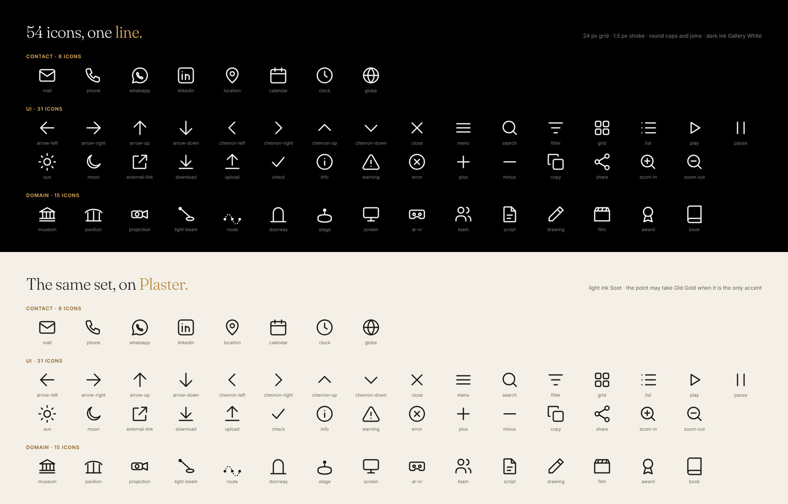

Chapter15
Iconography.
Fifty-four icons on the 24 grid, drawn in the same line grammar as the illustrations. One line, round caps, no fills — except the brand point.
- 15.1The icon set
- 15.2Grid, construction and rules
Sanzeed Mirza · Experiential Design ConsultantBrand Guidelines · Version 1.0 · November 2026
15.1 · The icon set
Fifty-four icons, one line.
Contact (8) · UI (31) · domain (15). SVG per icon with stroke="currentColor", a sprite, and PNG at 48 / 96 px in both inks. 05_GRAPHIC_ASSETS/Icons, master build_icons.py.

15.2 · Grid, construction and rules
The 24 grid.
Three icons on the construction grid with the safe area; the full set in both inks; the rules and the sprite usage.
In context · dark ink (Gallery White) and light ink (Soot)
- Grid 24 px, stroke 1.5 px, round caps and joins, no fills except the brand point. Keep 2 units of safe area.
- Size with CSS (width: 24px, 32, 48); never change the stroke. Minimum 16 px; tap targets ≥ 44 px.
- Single colour. The icon takes the text colour (currentColor). The point may be gold (class .pt) only when it is the single accent in the composition.
- Never mix in a stock icon set, add fills, shadows, outlines or a second weight; never redraw an icon — add a line of path data to build_icons.py.
- Functional colour (success, warning, error, info) sits on the icon, not the component around it.
<svg class="icon" width="24" height="24"><use href="#icon-mail"/></svg>
/* inline sanzeed-icons-sprite.svg once per page */
.icon { width: 24px; height: 24px; color: var(--fg-2) }
.icon .pt { fill: var(--accent) } /* light-beam, route, stage */